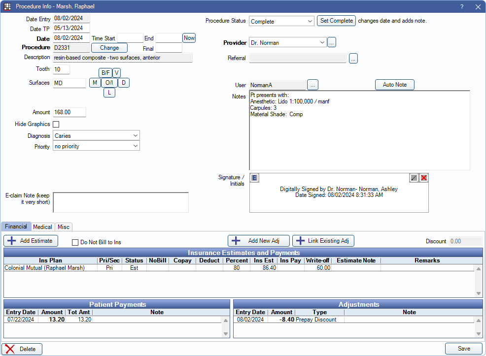
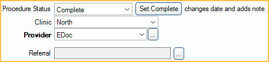
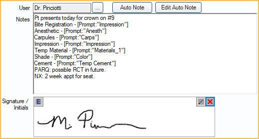

Procedure Info
View and edit procedure information, including procedure notes, from the Procedure Info window.
In the Chart Module double-click a procedure to edit.
This window can also be opened from other areas of Open Dental, including the Account Module, Treatment Plan Module, and the Edit Appointment window.
Date
The date area displays various dates related to the procedure, including the date completed, date treatment planned, and more.

Procedure and Treatment Area
Set various procedure details including treatment area or fee from this area.

The treatment area (e.g., tooth number, surfaces, arch, quadrant, etc.) can be easily set or updated from this area.
Change: If the wrong procedure code was charted, it can easily be updated without the need to rechart the procedure or delete the existing procedure. The procedure amount is automatically updated to reflect the correct procedure when it's updated.
Treatment Area: Available options in the area are automatically determined by procedure code setup. Options may include:
- Tooth
- Surfaces
- Quadrant
- Sextant: 1 - 6 in United States. 03 - 08 in Canada.
- Arch
- Tooth Range
Amount: The billable fee for the procedure is autoamtically determined by applicable Fee Schedules. This can be manually edited as needed.
Hide Graphics: Easily hide the graphics for a procedure from the Graphical Tooth Chart if the treatment is no longer applicable (e.g., a removed implant).
Diagnosis: Set a diagnosis (e.g., cracked tooth, IP, Apical perio) for the procedure.
Priority: Set a priority to organize treatment in the Treatment Plan Module . Options are customizable.
Prosthesis Replacement
For procedures marked as a prosthesis (e.g., crown, bridge, etc.), this area is available to enter applicable details.

E-Claim Note

E-claim Note: Enter a note that is included when sending an e-claim.
Procedure Status, Provider, and Referral
Easily update the procedure status (e.g., complete, treatment planned, referred out, etc.), update provider information, and or referral information.
Notes
Enter and sign procedure notes. This area supports the Auto Notes and Quick Paste Notes features to input note templates or common details quickly.
Procedure notes can also be viewed from the Progress Notes area in the Account Module.
Tabs
Financial: View and add insurance estimates, adjustments, payments, and treatment plan discounts.
Medical: Use this tab to attach ICD-10 diagnosis codes to the procedure or enter other medical claim information. See Medical Insurance for more information.
Misc: Enter Medicaid and Public Health details.